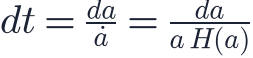
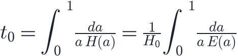
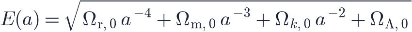
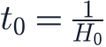
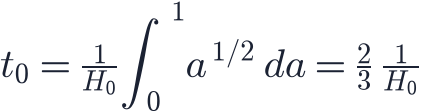
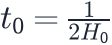
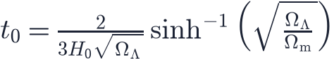
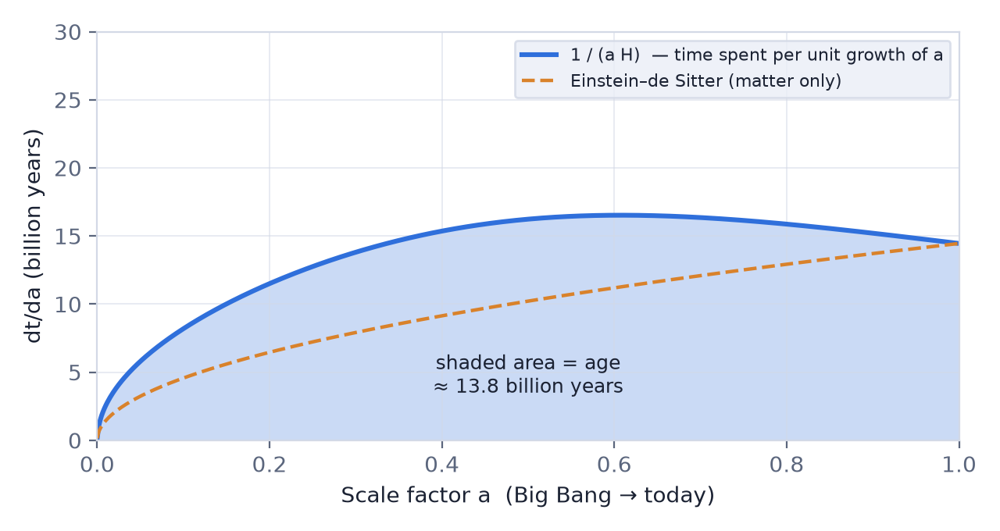
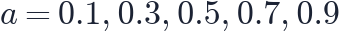
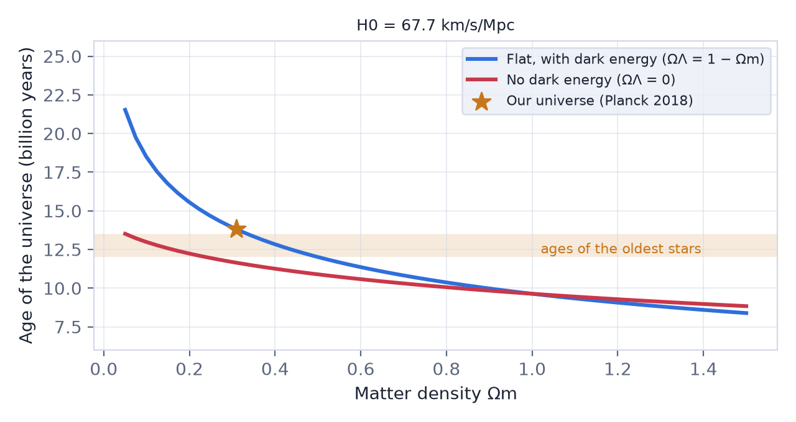

In this lesson you will learn
|
From expansion rate to age
The Hubble parameter tells us how fast the universe grows:  .
Turning this around, the time needed for the scale factor to grow by a small
amount is
.
Turning this around, the time needed for the scale factor to grow by a small
amount is

Adding up these small steps from the Big Bang ( ) to today (
) to today ( ) gives
the age of the universe:
) gives
the age of the universe:

where, from lesson L2.4,

Two ingredients The age is the Hubble time |
The same formula with the upper limit  gives the age of the universe
when light was emitted at redshift
gives the age of the universe
when light was emitted at redshift  .
.
Exact answers for simple universes
For a few universes the integral can be solved with pen and paper.
Empty universe (, the Milne model). Then and the integrand is 1:

The expansion never slows down, so the Hubble time is exactly the age.
Flat, matter only (Einstein–de Sitter). Then :

Gravity slowed the expansion, so the universe needed less time to reach today's
size. With  km/s/Mpc this is only 9.6 billion years.
km/s/Mpc this is only 9.6 billion years.
Flat, radiation only. gives

. Radiation decelerates the expansion even more strongly.Flat ΛCDM, ignoring radiation. The integral can still be done exactly:

For and this gives 13.8 billion years. Radiation changes the result by less than 0.1%, because it only mattered during the first few hundred thousand years.
Seeing the integral

The curve shows : the time the universe spends while the scale factor grows by one unit. The area under the curve is the age.
- Near
 the expansion was extremely fast, so very little time passed.
the expansion was extremely fast, so very little time passed. - In the matter-only universe (dashed) the curve always rises: the expansion keeps slowing down.
- With dark energy the curve reaches a maximum around and then falls again as the expansion accelerates. The extra area compared with the dashed curve is why ΛCDM is older.
A numerical estimate by hand Split the range into five equal steps and evaluate the integrand at the middle of each step (the midpoint rule). For Planck 2018 the values of at  are 8.2, 13.8, 16.2, 16.4 and 15.2 billion years. Their average, , times the step range of 1, is already within about 1% of the exact result. With 100 steps the estimate is 13.806 billion years. |
The Cosmos app evaluates the integral with an adaptive method that refines the steps automatically until the answer is accurate to about one part in a hundred million.
Try it: Cosmology Calculator Compare the ages of Planck 2018, Einstein–de Sitter and the empty Milne universe. Which one equals the Hubble time? |
What the age depends on
The Hubble constant. For fixed Ω values, . A faster expansion means a younger universe:
| Age for Ωm = 0.31, ΩΛ = 0.69 | |
|---|---|
| 67.7 (CMB) | 13.8 billion years |
| 73.0 (Cepheids and supernovae) | 12.8 billion years |
The Hubble tension therefore also affects the age.
Matter and dark energy. More matter means more deceleration and a younger universe. Dark energy makes it older.

Try it: Expansion History Explorer Move Ωm and ΩΛ on the map and watch the age in the summary change. Can you find a universe older than 20 billion years? |
Checking the age: the oldest stars
A universe cannot be younger than its oldest stars. Astronomers estimate stellar ages independently of cosmology:
- Globular clusters, dense groups of very old stars in the halo of the Milky Way. Comparing their colours and brightnesses with models of stellar evolution gives ages of about 12–13.5 billion years.
- White dwarf cooling. White dwarfs cool like embers at a predictable rate; the faintest ones in old clusters are about 12 billion years old.
- Radioactive dating. Uranium and thorium in very old stars decay like a clock and give ages of roughly 12–14 billion years, with larger uncertainties.
The age problem In the 1990s many astronomers believed the universe contained only matter. With
the measured |
Remember this
|